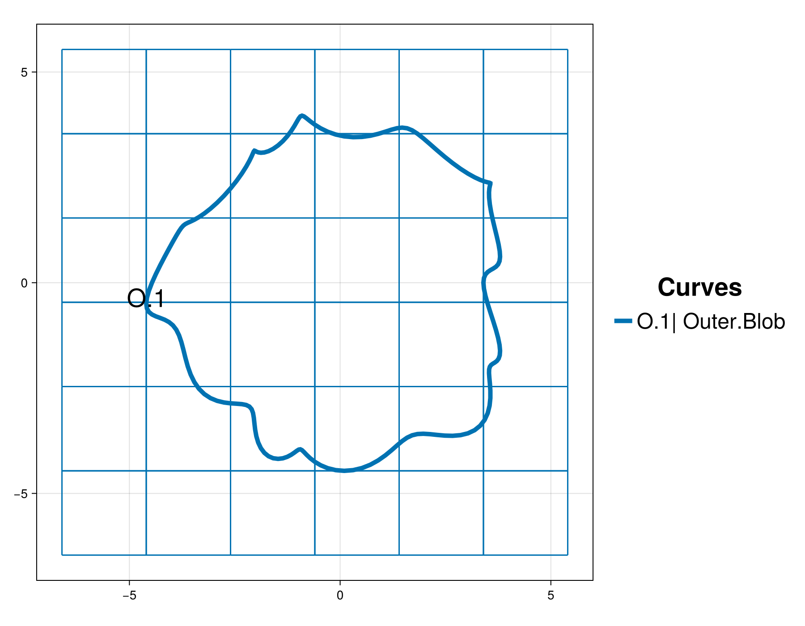
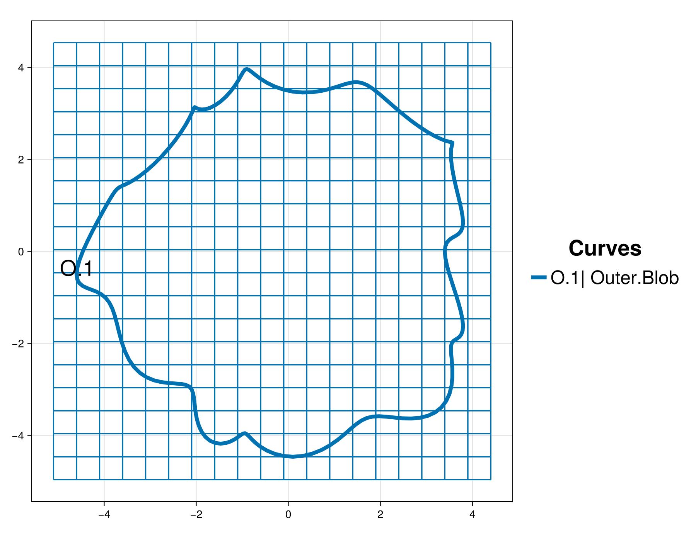
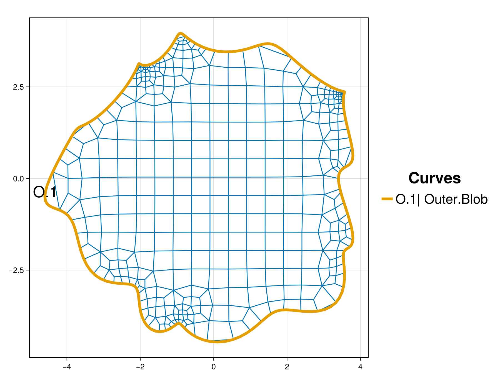
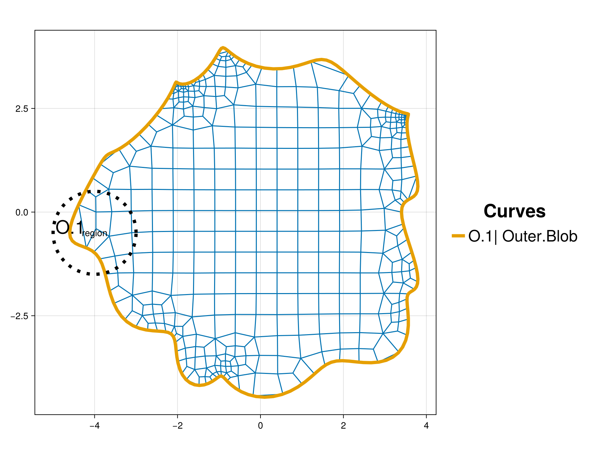
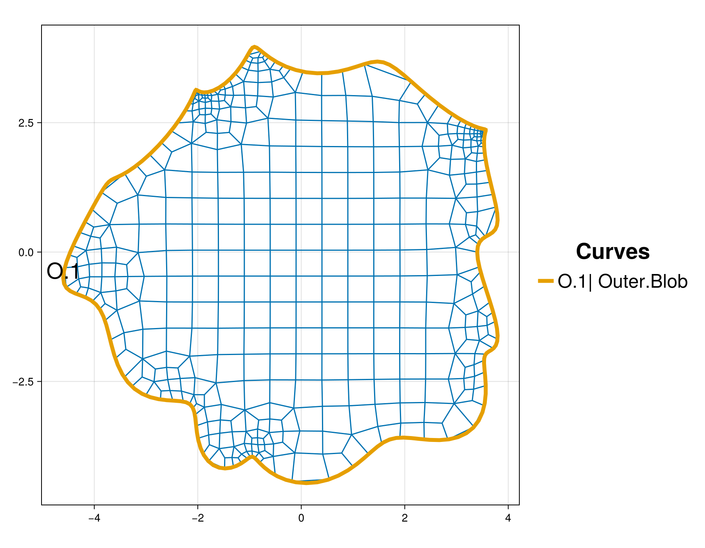

Curved outer boundary
The purpose of this tutorial is to demonstrate how to create an unstructured mesh on a domain with a curved outer boundary. This outer boundary curve is defined by parametric equations and contains fine features as well as smooth regions.
It provides details and clarification for the script interactive_blob.jl from the examples folder.
The outer boundary, background grid and mesh are visualized for quality inspection. The tutorial also shows how to adjust the background and add a local refinement region in order to better resolve a portion of the curved boundary.
Synopsis
This tutorial demonstrates how to:
- Define a curved outer boundary using parametric equations.
- Add and adjust the background grid.
- Visualize an interactive mesh project.
- Add manual refinement to a local region of the domain.
Initialization
Before we start, we need to load the required packages. Besides HOHQMesh.jl, we use CairoMakie.jl for visualization. Alternatively, one can use GLMakie for interactive visualization in a Julia REPL session.
using HOHQMeshusing CairoMakieNow we are ready to interactively generate unstructured quadrilateral meshes!
We create a new project with the name "TheBlob" and assign "out" to be the folder where any output files from the mesh generation process will be saved. By default, the output files created by HOHQMesh will carry the same name as the project. For example, the resulting mesh file from this tutorial will be named TheBlob.mesh. If the folder out does not exist, it will be created automatically in the current file path.
blob_project = newProject("TheBlob", "out");Add the outer boundary
The outer boundary curve for the domain of interest in this tutorial is given by the parametric equations
\[ \begin{aligned} x(t) &= 4\cos(2 \pi t) - \frac{3}{5}\cos^3(8 \pi t),\\[0.2cm] y(t) &= 4\sin(2 \pi t) - \frac{1}{2}\sin^2(11 \pi t),\\[0.2cm] z(t) &= 0 \end{aligned} \qquad t\in[0,1]\]
Parametric equations in HOHQMesh can be any legitimate equation and use intrinsic functions available in Fortran, e.g., $\sin$, $\cos$, exp. The constant pi is available for use. Exponentiation is done with ^. All number literals are interpreted as floating point numbers.
The following commands create a new curve for the parametric equations above
xEqn = "x(t) = 4 * cos(2 * pi * t) - 0.6 * cos(8 * pi * t)^3";yEqn = "y(t) = 4 * sin(2 * pi * t) - 0.5 * sin(11* pi * t)^2";zEqn = "z(t) = 0.0";blob = newParametricEquationCurve("Blob", xEqn, yEqn, zEqn);The name of this curve is assigned to be "Blob". This name is also the label that HOHQMesh will give to this boundary curve in the resulting mesh file.
Now that we have created the boundary curve it must be added as an outer boundary in the blob_project.
addCurveToOuterBoundary!(blob_project, blob)Added curve Blob to the outer boundary chain.Add a background grid
HOHQMesh requires a background grid for the mesh generation process. This background grid sets the base resolution of the desired mesh. HOHQMesh will automatically subdivide from this background grid near sharp features of any curved boundaries.
For a domain bounded by an outer boundary curve, this background grid is set by indicating the desired element size in the $x$ and $y$ directions. To start, we set the background grid for blob_project to have elements with side length two in each direction
addBackgroundGrid!(blob_project, [2.0, 2.0, 0.0]);We next visualize the outer boundary curve and background grid with the following Here, we take the sum of the keywords MODEL and GRID in order to simultaneously visualize the curves and background grid. The resulting plot is given below. The chain of outer boundary curves is called "Outer" and it contains a single curve "Blob" labeled in the figure by O.1. The optional argument figureSize is used here to produce plots with reduced white space for better presentation in the docs.
plotProject!(blob_project, MODEL+GRID; figureSize = (900, 700))
From the visualization we see that the background grid is likely too coarse to produce a "good" quadrilateral mesh for this domain. We reset the background grid size to have elements with size one half in each direction
setBackgroundGridSize!(blob_project, 0.5, 0.5);Note, that after we execute the command above the visualization updates automatically with the outer boundary curve and the new background grid.

The new background grid that gives a finer initial resolution looks suitable to continue to the mesh generation.
Initial mesh and user adjustments
We next generate the mesh from the information contained in the blob_project. This will output the following files to the out folder:
TheBlob.control: A HOHQMesh control file for the current project.TheBlob.tec: A TecPlot formatted file to visualize the mesh with other software, e.g., ParaView.TheBlob.mesh: A mesh file with formatISM-V2(the default format).
To do this we execute the command
generate_mesh(blob_project)
*******************
2D Mesh Statistics:
*******************
Total time = 9.6429999999999988E-002
Number of nodes = 479
Number of Edges = 895
Number of Elements = 417
Number of Subdivisions = 5
Mesh Quality:
Measure Minimum Maximum Average Acceptable Low Acceptable High Reference
Signed Area 0.00025286 0.36208840 0.11936333 0.00000000 999.99900000 1.00000000
Aspect Ratio 1.00002882 2.58443761 1.26335838 1.00000000 999.99900000 1.00000000
Condition 1.00000000 3.12867591 1.18585825 1.00000000 4.00000000 1.00000000
Edge Ratio 1.00006176 4.77438730 1.51314025 1.00000000 4.00000000 1.00000000
Jacobian 0.00011275 0.28170345 0.10292806 0.00000000 999.99900000 1.00000000
Minimum Angle 29.38249259 89.99827733 73.08294187 40.00000000 90.00000000 90.00000000
Maximum Angle 90.00132795 156.98701187 109.36585212 90.00000000 135.00000000 90.00000000
Area Sign 1.00000000 1.00000000 1.00000000 1.00000000 1.00000000 1.00000000
Boundary Error Quality:
Boundary Name Max L2 Error Max H1 Error
Outer Boundary 4.79189227E-05 1.58057740E-02The call to generate_mesh prints mesh quality statistics to the screen and updates the visualization. The HOHQMesh output also reports the maximum $L^2$ and $H^1$ errors along the curved outer boundary. The background grid is removed from the visualization when the mesh is generated.
Currently, only the "skeleton" of the mesh is visualized. Thus, the high-order curved boundary information is not seen in the plot but this information is present in the generated mesh file.

Inspecting the mesh we see that the automatic subdivision in HOHQMesh does well to capture the fine features of the curved outer boundary. Although, we see that the mesh near the point $(-4, 0)$ is still quite coarse. To remedy this we manually add a RefinementCenter near this region of the domain to force HOHQMesh to increase the resolution in this area. We create and add this refinement region to the current project with
center = newRefinementCenter("region", "smooth", [-4.0, -0.5, 0.0], 0.4, 1.0);addRefinementRegion!(blob_project, center)Above we create a circular refinement region centered at the point $(-4, -0.5)$ with a desired resolution size $0.4$ and a radius of $1.0$. Upon adding this refinement region to blob_project, the visualization will update to indicate the location and size of the manual refinement region.

Final mesh
With the refinement region added to the project we can regenerate the mesh. Note, this will create and save new output files TheBlob.control, TheBlob.tec, TheBlob.mesh and update the figure.
generate_mesh(blob_project)
*******************
2D Mesh Statistics:
*******************
Total time = 0.10342999999999999
Number of nodes = 503
Number of Edges = 940
Number of Elements = 438
Number of Subdivisions = 5
Mesh Quality:
Measure Minimum Maximum Average Acceptable Low Acceptable High Reference
Signed Area 0.00025286 0.36208840 0.11412688 0.00000000 999.99900000 1.00000000
Aspect Ratio 1.00002883 2.47056840 1.26416662 1.00000000 999.99900000 1.00000000
Condition 1.00000000 3.12867592 1.18429212 1.00000000 4.00000000 1.00000000
Edge Ratio 1.00006176 4.77438730 1.51407242 1.00000000 4.00000000 1.00000000
Jacobian 0.00011275 0.28170345 0.09814903 0.00000000 999.99900000 1.00000000
Minimum Angle 29.38249259 89.99827897 72.80049710 40.00000000 90.00000000 90.00000000
Maximum Angle 90.00132784 156.98701188 109.63478104 90.00000000 135.00000000 90.00000000
Area Sign 1.00000000 1.00000000 1.00000000 1.00000000 1.00000000 1.00000000
Boundary Error Quality:
Boundary Name Max L2 Error Max H1 Error
Outer Boundary 7.75495247E-06 3.51290591E-03Note, the circular region indicating the refinement center is removed from the plot when the mesh is generated. The addition of a targeted refinement region also reduced the maximum $L^2$ and $H^1$ errors of the new mesh.

Now we decide that we are satisfied with the mesh quality and resolution of the outer boundary curve.
Summary
In this tutorial we demonstrated how to:
- Define a curved outer boundary using parametric equations.
- Add and adjust the background grid.
- Visualize an interactive mesh project.
- Add manual refinement to a local region of the domain.
This page was generated using Literate.jl.